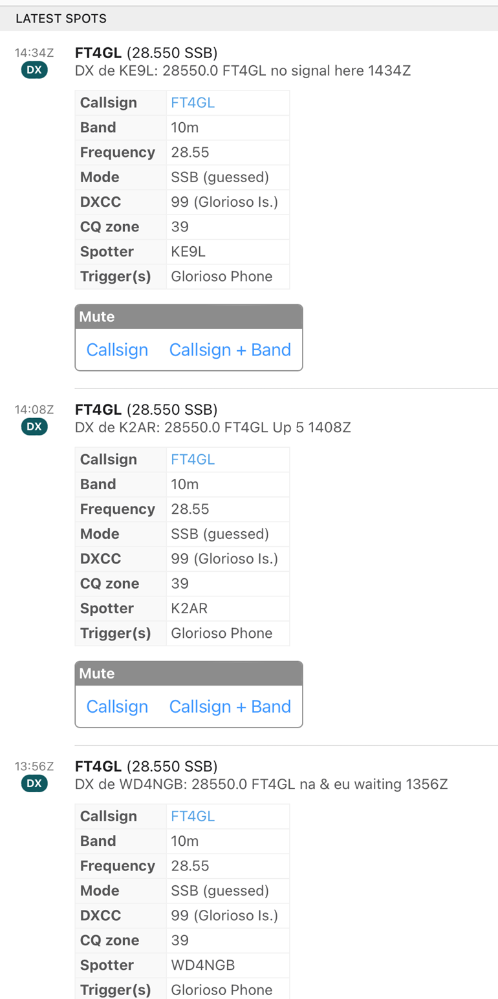

<!-- MHonArc v2.6.19+ -->
<!--X-Subject: Re: [NCDXC Chat] FT4GL ATNO day -->
<!--X-From-R13: &#60;rntyrlrzqNpbzpnfg.arg> -->
<!--X-Date: Fri, 14 Jun 2024 23:07:43 &#45;0500 -->
<!--X-Message-Id: 006101dabed9$83dd73c0$8b985b40$@comcast.net -->
<!--X-Content-Type: multipart/related -->
<!--X-Reference: c7e5c5d6&#45;5f1f&#45;46a0&#45;ba0d&#45;ef98c75f4c20@yahoo.com -->
<!--X-Reference: 8CBC757E&#45;A37C&#45;4409&#45;9A6E&#45;61EA2A3CDEA7@gmail.com -->
<!--X-Derived: pngzbzR4yGzf4.png -->
<!--X-Head-End-->
<!DOCTYPE HTML PUBLIC "-//W3C//DTD HTML 4.01 Transitional//EN"
        "http://www.w3.org/TR/html4/loose.dtd">
<html>
<head>
<title>Re: [NCDXC Chat] FT4GL ATNO day</title>
<link rev="made" href="mailto:eagleyemd@comcast.net">
</head>
<body>
<!--X-Body-Begin-->
<!--X-User-Header-->
<!--X-User-Header-End-->
<!--X-TopPNI-->
<hr>
[<a href="msg35866.html">Date Prev</a>][<a href="msg35868.html">Date Next</a>][<a href="msg35866.html">Thread Prev</a>][<a href="msg35868.html">Thread Next</a>][<a href="maillist.html#35867">Date Index</a>][<a href="threads.html#35867">Thread Index</a>]
<!--X-TopPNI-End-->
<!--X-MsgBody-->
<!--X-Subject-Header-Begin-->
<h1>Re: [NCDXC Chat] FT4GL ATNO day</h1>
<hr>
<!--X-Subject-Header-End-->
<!--X-Head-of-Message-->
<ul>
<li><em>To</em>: &quot;'Rick NK7I'&quot; &lt;<a href="mailto:rick.nk7i%40gmail.com">rick.nk7i@gmail.com</a>&gt;, &quot;'Steve Dyer W1SRD'&quot; &lt;<a href="mailto:w1srd%40yahoo.com">w1srd@yahoo.com</a>&gt;</li>
<li><em>Subject</em>: Re: [NCDXC Chat] FT4GL ATNO day</li>
<li><em>From</em>: &lt;<a href="mailto:eagleyemd%40comcast.net">eagleyemd@comcast.net</a>&gt;</li>
<li><em>Date</em>: Fri, 14 Jun 2024 21:07:17 -0700</li>
<li><em>Cc</em>: &lt;<a href="mailto:chat%40ncdxc.org">chat@ncdxc.org</a>&gt;</li>
<li><em>Dkim-signature</em>: v=1; a=rsa-sha256; c=relaxed/relaxed; d=comcast.net; s=20190202a; t=1718424460; bh=cFnZ9kTLvb86aPXKQa92GUhVP0L7A4xd+6Qb+6bIpUg=; h=Received:Received:From:To:Subject:Date:Message-ID:MIME-Version: Content-Type:Xfinity-Spam-Result; b=rSeZcI/LdjAtro9PxN3oggowdW4XDhlMLe6mfj2ntMcshJGJjvHfcumfxRaDk66rh 5MT96qIZq8kyTwEabsMglhqfp0CMNgOHzQ9vkHtUQPN/i7o5V7pLPLNG0D/rFRB7ui Yqjn463ML5OrKZsvBgtiUmH2UURu8cT8s/MuWU3NP+u3YYidcde2byVo9aB6msVEx1 aMe89pyWc5fTsyMVUIQ8sTQesPyTTGUKlnNk2vFpEEibusKiSMyeBVa1ShypGOZ4Ua oGpsiC/qmO9uMpNZI0hr7vKv6wvX7OmDy/6AtC4XTP1Zzbq0Mlq2UFSR0bUux47+eB pWibLHz3rXmzw==</li>
<li><em>In-reply-to</em>: &lt;<a href="msg35866.html">8CBC757E-A37C-4409-9A6E-61EA2A3CDEA7@gmail.com</a>&gt;</li>
<li><em>List-archive</em>: &lt;<a href="http://mail.ncdxc.org/mailman/private/chat_ncdxc.org/">http://mail.ncdxc.org/mailman/private/chat_ncdxc.org/</a>&gt;</li>
<li><em>List-help</em>: &lt;<a href="mailto:chat-request@ncdxc.org?subject=help">mailto:chat-request@ncdxc.org?subject=help</a>&gt;</li>
<li><em>List-id</em>: NCDXC Discussion List &lt;chat.ncdxc.org&gt;</li>
<li><em>List-post</em>: &lt;<a href="mailto:chat@ncdxc.org">mailto:chat@ncdxc.org</a>&gt;</li>
<li><em>List-subscribe</em>: &lt;<a href="http://mail.ncdxc.org/mailman/listinfo/chat_ncdxc.org">http://mail.ncdxc.org/mailman/listinfo/chat_ncdxc.org</a>&gt;, &lt;<a href="mailto:chat-request@ncdxc.org?subject=subscribe">mailto:chat-request@ncdxc.org?subject=subscribe</a>&gt;</li>
<li><em>List-unsubscribe</em>: &lt;<a href="http://mail.ncdxc.org/mailman/options/chat_ncdxc.org">http://mail.ncdxc.org/mailman/options/chat_ncdxc.org</a>&gt;, &lt;<a href="mailto:chat-request@ncdxc.org?subject=unsubscribe">mailto:chat-request@ncdxc.org?subject=unsubscribe</a>&gt;</li>
<li><em>References</em>: &lt;<a href="msg35865.html">c7e5c5d6-5f1f-46a0-ba0d-ef98c75f4c20@yahoo.com</a>&gt; &lt;<a href="msg35866.html">8CBC757E-A37C-4409-9A6E-61EA2A3CDEA7@gmail.com</a>&gt;</li>
<li><em>Thread-index</em>: AQHO8sHWp9bG7rD8AB7SlirVGrPSUQHt3sN2sdBc06A=</li>
</ul>
<!--X-Head-of-Message-End-->
<!--X-Head-Body-Sep-Begin-->
<hr>
<!--X-Head-Body-Sep-End-->
<!--X-Body-of-Message-->
<table width="100%"><tr><td style="a:link { color: blue } a:visited { color: purple } "><div class=WordSection1><p class=MsoNormal>He&#x2019;s at 10131 now. I&#x2019;ve been watching for about an hour. He has been alternating reports to an N2 and a YO, with no completed Qs, and frequent CQs. As we hit the optimum relative day/night position, he peaked at -10. I don&#x2019;t have a 30m slot, but I&#x2019;m grateful for the slots I have as well as the ATNO, but this is not F/H.<o:p></o:p></p><p class=MsoNormal>783, Bruce K3NQ<o:p></o:p></p><p class=MsoNormal><o:p>&nbsp;</o:p></p><div><div style='border:none;border-top:solid #E1E1E1 1.0pt;padding:3.0pt 0in 0in 0in'><p class=MsoNormal><b>From:</b> Chat &lt;chat-bounces@ncdxc.org&gt; <b>On Behalf Of </b>Rick NK7I via Chat<br><b>Sent:</b> Friday, June 14, 2024 5:02 PM<br><b>To:</b> Steve Dyer W1SRD &lt;w1srd@yahoo.com&gt;<br><b>Cc:</b> chat@ncdxc.org<br><b>Subject:</b> Re: [NCDXC Chat] FT4GL ATNO day<o:p></o:p></p></div></div><p class=MsoNormal><o:p>&nbsp;</o:p></p><p class=MsoNormal>Apparently he was there, but as it&#x2019;s ATNO day, I didn&#x2019;t even look. &nbsp;And the band hasn&#x2019;t been open in the PNW.<o:p></o:p></p><div><p class=MsoNormal><o:p>&nbsp;</o:p></p></div><div><p class=MsoNormal><o:p></o:p></p></div><div><p class=MsoNormal><o:p>&nbsp;</o:p></p><div><p class=MsoNormal>73,<o:p></o:p></p><div><p class=MsoNormal>Rick nk7i<o:p></o:p></p></div></div><div><p class=MsoNormal><br><br><o:p></o:p></p><blockquote style='margin-top:5.0pt;margin-bottom:5.0pt'><p class=MsoNormal style='margin-bottom:12.0pt'>On Jun 14, 2024, at 5:01&#x202F;PM, Steve Dyer W1SRD via Chat &lt;<a rel="nofollow" href="mailto:chat@ncdxc.org">chat@ncdxc.org</a>&gt; wrote:<o:p></o:p></p></blockquote></div><blockquote style='margin-top:5.0pt;margin-bottom:5.0pt'><div><p class=MsoNormal style='margin-bottom:12.0pt'>&#xFEFF; I don't think conditions were very good today. Sorry you didn't get him. Yet.<br>73,<br>Steve<br>W1SRD<o:p></o:p></p><div><p class=MsoNormal>On 6/14/2024 4:55 PM, Will Shattuck via Chat wrote:<o:p></o:p></p></div><blockquote style='margin-top:5.0pt;margin-bottom:5.0pt'><div><div><div><p class=MsoNormal><span style='font-family:"helvetica neue",serif;color:#313131'>I was up at 1200utc and didn&#x2019;t see anything tat would me ATNO for west coast. I had everything ready for SSB as he indicated. Frustrated.&nbsp;<o:p></o:p></span></p></div><div><p class=MsoNormal><span style='font-size:12.0pt;font-family:"helvetica neue",serif;color:#313131'><o:p>&nbsp;</o:p></span></p></div><div><p class=MsoNormal><span style='font-family:"helvetica neue",serif;color:#313131'>I wish I could go on a DXpedition and do things the right way. I&#x2019;m sooooo frustrated.&nbsp;<o:p></o:p></span></p></div></div><p class=MsoNormal><br clear=all><br><br><o:p></o:p></p><div><div><p class=MsoNormal><br><br>Will Shattuck<br>KN6TZK <o:p></o:p></p></div></div></div><div><p class=MsoNormal><o:p>&nbsp;</o:p></p></div><div><p class=MsoNormal><o:p>&nbsp;</o:p></p><div><div><p class=MsoNormal>On Fri, Jun 14, 2024 at 2:02&#x202F;PM Al N6TA via Chat &lt;<a rel="nofollow" href="mailto:chat@ncdxc.org">chat@ncdxc.org</a>&gt; wrote:<o:p></o:p></p></div><blockquote style='border:none;border-left:solid #CCCCCC 1.0pt;padding:0in 0in 0in 6.0pt;margin-left:4.8pt;margin-right:0in'><div><p class=MsoNormal>I notice FT4GL is on 40 FT8 and 80 M FT8 right now.&nbsp; How is that translating into the SSB ATNO day they announced?&nbsp; I did see spots on 10 M early this morning but there was a lot of 12 FT8 activity.&nbsp; Just an observation. <o:p></o:p></p><div><p class=MsoNormal>Al&nbsp; N6TA<o:p></o:p></p></div></div><p class=MsoNormal>_______________________________________________<br>Chat mailing list<br><a rel="nofollow" href="mailto:Chat@ncdxc.org" target="_blank">Chat@ncdxc.org</a><br><a rel="nofollow" href="http://mail.ncdxc.org/mailman/listinfo/chat_ncdxc.org" target="_blank">http://mail.ncdxc.org/mailman/listinfo/chat_ncdxc.org</a><o:p></o:p></p></blockquote></div></div><p class=MsoNormal><br><br><o:p></o:p></p><pre>_______________________________________________<o:p></o:p></pre><pre>Chat mailing list<o:p></o:p></pre><pre><a rel="nofollow" href="mailto:Chat@ncdxc.org">Chat@ncdxc.org</a><o:p></o:p></pre><pre><a rel="nofollow" href="http://mail.ncdxc.org/mailman/listinfo/chat_ncdxc.org">http://mail.ncdxc.org/mailman/listinfo/chat_ncdxc.org</a><o:p></o:p></pre></blockquote><p class=MsoNormal><br>_______________________________________________<br>Chat mailing list<br><a rel="nofollow" href="mailto:Chat@ncdxc.org">Chat@ncdxc.org</a><br><a rel="nofollow" href="http://mail.ncdxc.org/mailman/listinfo/chat_ncdxc.org">http://mail.ncdxc.org/mailman/listinfo/chat_ncdxc.org</a><o:p></o:p></p></div></blockquote></div></div></td></tr></table>
<!--X-Body-of-Message-End-->
<!--X-MsgBody-End-->
<!--X-Follow-Ups-->
<hr>
<!--X-Follow-Ups-End-->
<!--X-References-->
<ul><li><strong>References</strong>:
<ul>
<li><strong><a name="35865" href="msg35865.html">Re: [NCDXC Chat] FT4GL ATNO day</a></strong>
<ul><li><em>From:</em> Steve Dyer W1SRD &lt;w1srd@yahoo.com&gt;</li></ul></li>
<li><strong><a name="35866" href="msg35866.html">Re: [NCDXC Chat] FT4GL ATNO day</a></strong>
<ul><li><em>From:</em> Rick NK7I &lt;rick.nk7i@gmail.com&gt;</li></ul></li>
</ul></li></ul>
<!--X-References-End-->
<!--X-BotPNI-->
<ul>
<li>Prev by Date:
<strong><a href="msg35866.html">Re: [NCDXC Chat] FT4GL ATNO day</a></strong>
</li>
<li>Next by Date:
<strong><a href="msg35868.html">[NCDXC Chat] 5k5U  10.136 FT8</a></strong>
</li>
<li>Previous by thread:
<strong><a href="msg35866.html">Re: [NCDXC Chat] FT4GL ATNO day</a></strong>
</li>
<li>Next by thread:
<strong><a href="msg35868.html">[NCDXC Chat] 5k5U  10.136 FT8</a></strong>
</li>
<li>Index(es):
<ul>
<li><a href="maillist.html#35867"><strong>Date</strong></a></li>
<li><a href="threads.html#35867"><strong>Thread</strong></a></li>
</ul>
</li>
</ul>

<!--X-BotPNI-End-->
<!--X-User-Footer-->
<!--X-User-Footer-End-->
</body>
</html>
